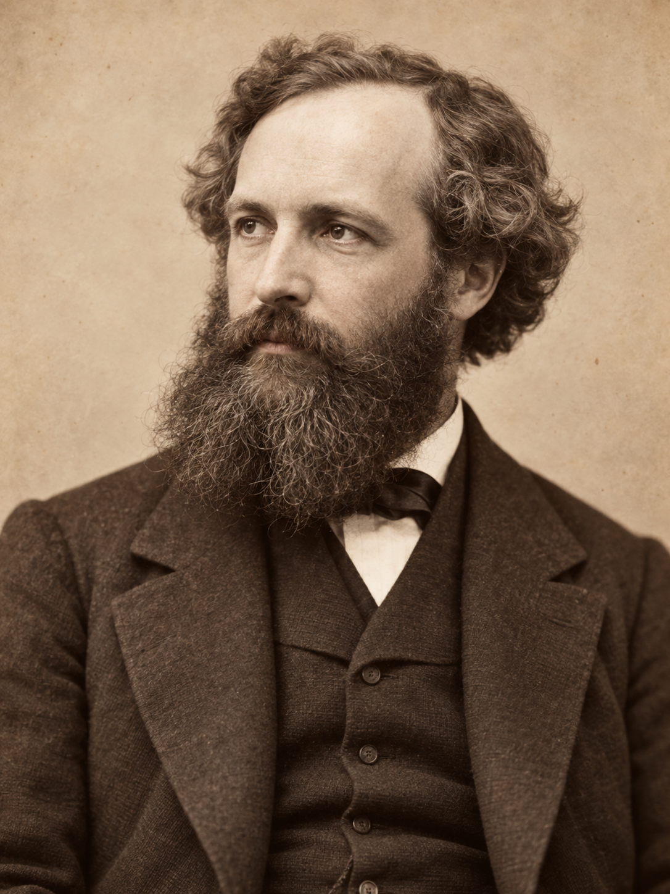
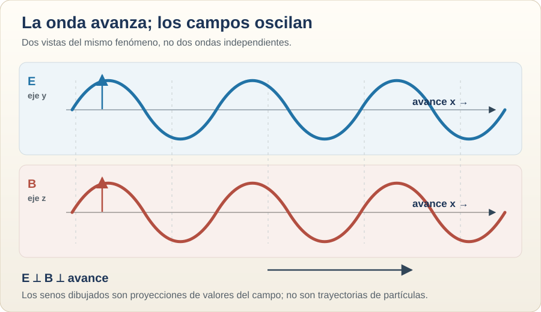
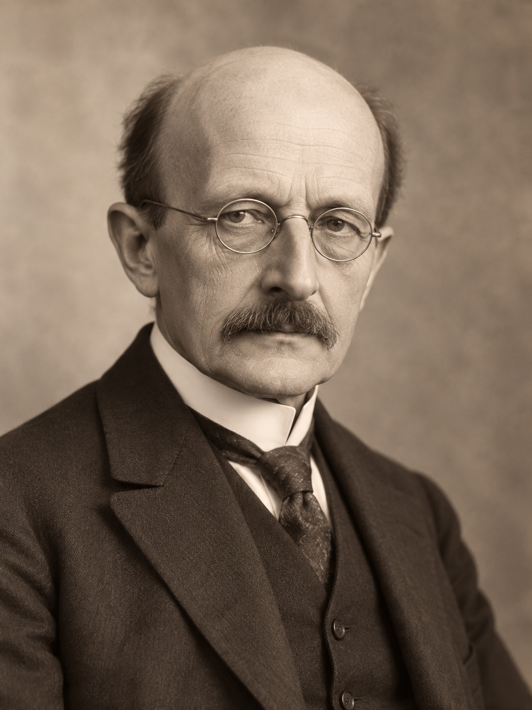
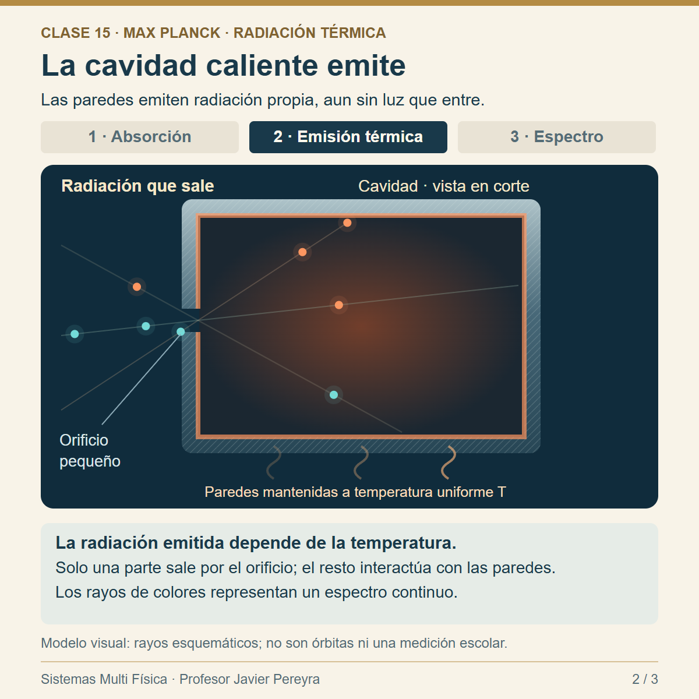
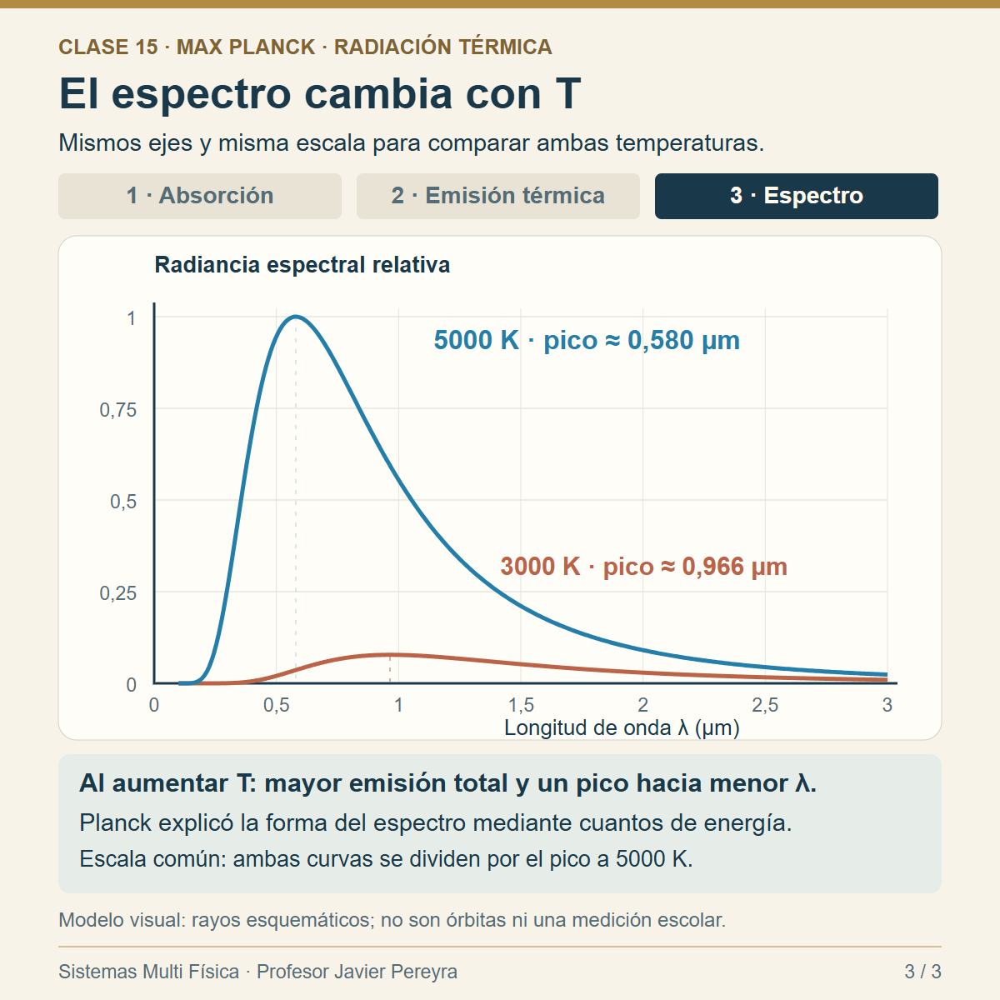
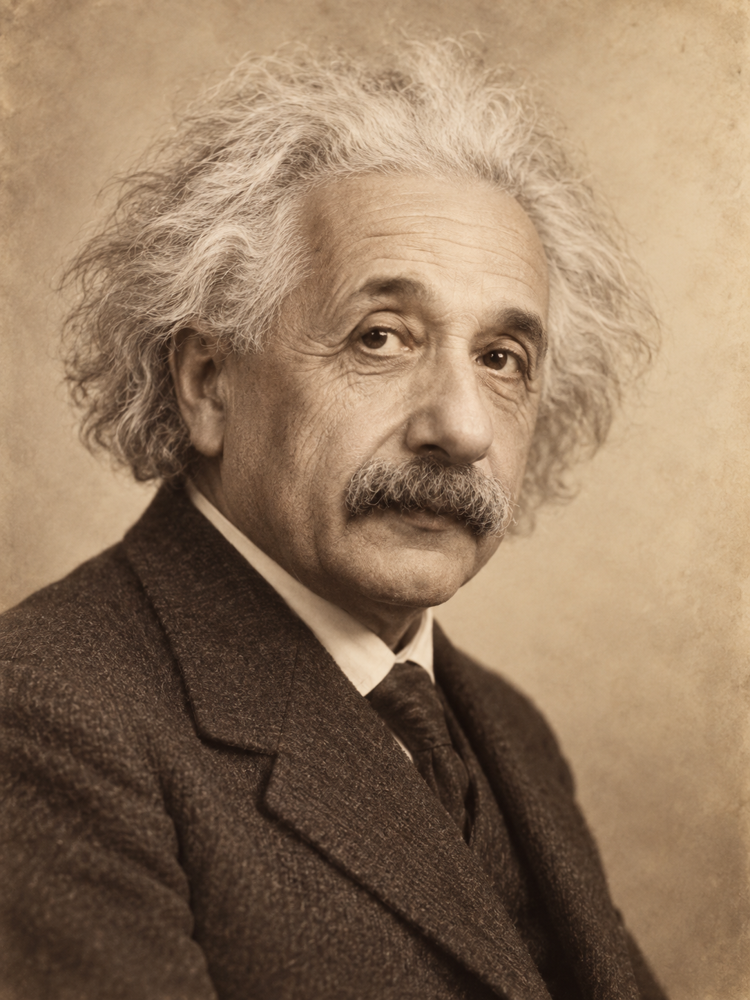
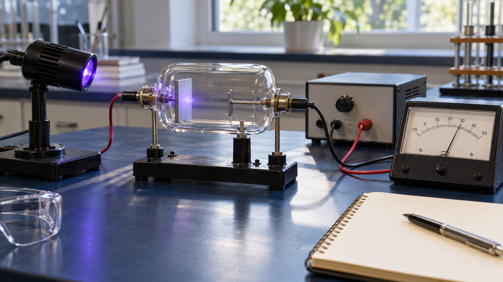
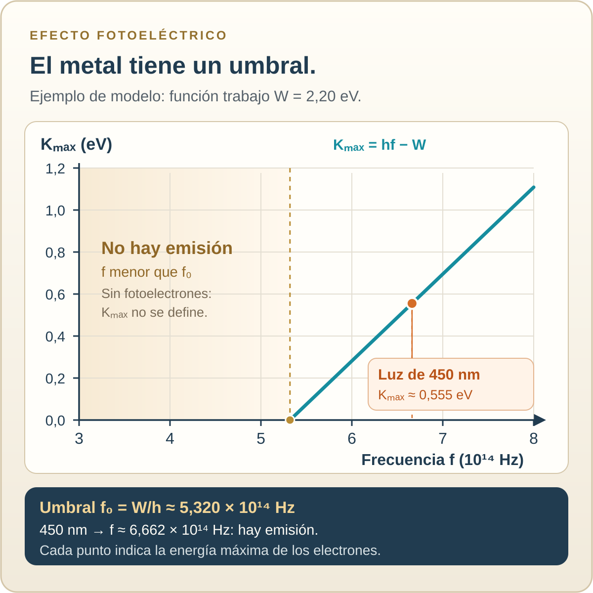
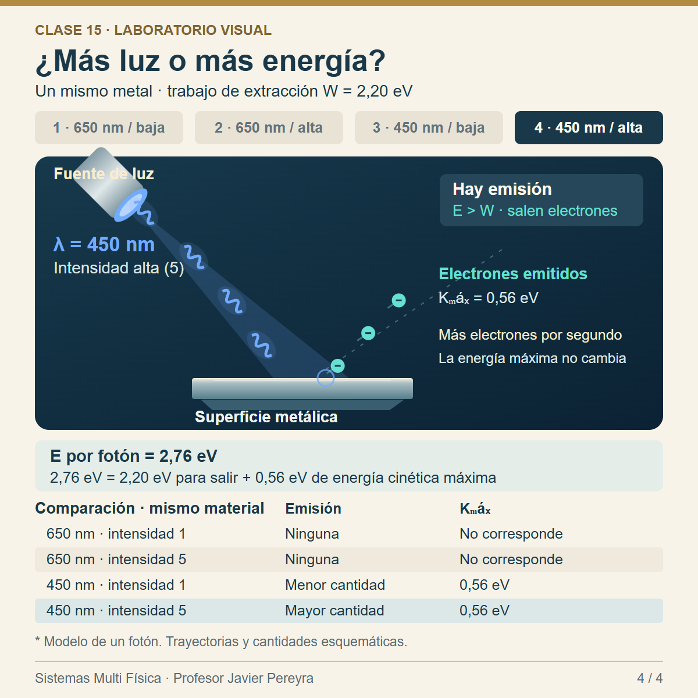

Sistemas Multi Física · Profesor Javier Pereyra
De Maxwell a Einstein: nuevos modelos de la luz
La luz se propaga como onda electromagnética y se intercambia con la materia en cuantos de energía. ¿Qué observación nos obliga a ampliar el modelo?
1 La pregunta que dejó Young
En la clase 14, la interferencia de Young mostró que la luz puede producir franjas propias de las ondas. Sin embargo, quedaba por explicar qué es lo que oscila y cómo la luz entrega energía a la materia. Esta clase sigue el camino de los modelos: una teoría nueva debe conservar los aciertos anteriores y explicar los datos que faltaban.
Corpúsculos y frentes de onda para discutir la propagación.
Las franjas de interferencia dan evidencia del comportamiento ondulatorio.
Los campos eléctrico y magnético forman una onda que viaja en el vacío.
La energía se intercambia en cuantos; el fotón explica el efecto fotoeléctrico.
2 Maxwell: una onda de campos
Oersted mostró que una corriente eléctrica produce campo magnético; Faraday estudió cómo un campo magnético variable puede inducir efectos eléctricos. Maxwell reunió y amplió estas relaciones en una teoría de campos: sus ecuaciones admiten ondas electromagnéticas que se propagan incluso donde no hay materia.
En una onda luminosa que avanza en el vacío, el campo eléctrico \(\vec E\) y el campo magnético \(\vec B\) oscilan perpendicularmente entre sí y a la dirección de avance. El dibujo representa sus valores en dos proyecciones: las curvas no son caminos recorridos por electrones ni por fotones.

2.1. De una carga que oscila a una onda electromagnética
Velocidad del dibujo constante; λ = v/f.
Cómo leerlo: abajo, la carga oscila y se acelera; los arcos dorados representan frentes de fase que se alejan. No son líneas de campo ni caminos de fotones. Arriba se muestra una onda plana ideal, como aproximación local lejos de la fuente. La sonda permanece fija y permite comparar los campos y sus variaciones temporales. Las curvas E/E₀ y B/B₀ están normalizadas: en el vacío, las amplitudes físicas cumplen (E_0=cB_0), pero tienen unidades diferentes.
Escala didáctica: la frecuencia está ralentizada para verla; la velocidad y la longitud de onda se expresan en unidades del dibujo. La amplitud del control modifica el tamaño visual. La intensidad angular del dipolo es máxima en direcciones perpendiculares a la oscilación y nula sobre su eje en el campo lejano. No se representan los campos completos próximos a la carga.
Exploración: pausá cerca de un máximo de E. ¿Cómo es B en ese instante? ¿Qué ocurre con las derivadas? Luego aumentá la frecuencia y compará la longitud de onda. Las ecuaciones de Maxwell conectan variaciones espaciales y temporales de los campos; una derivada temporal aislada no explica toda la propagación.
Esquema 1 · qué oscila en la luz

Una misma relación para todas las ondas electromagnéticas en el vacío:
\(c\): rapidez de la luz en el vacío; \(\lambda\): longitud de onda en metros; \(f\): frecuencia en hercios. La frecuencia la fija la fuente. A mayor \(f\), menor \(\lambda\) en el vacío.
2.2. El visible es una pequeña parte del espectro
Hacia la derecha aumenta la frecuencia y disminuye la longitud de onda en el vacío. La luz visible ocupa aproximadamente \(400\) a \(700\ \text{nm}\); los límites son graduales.
Ejemplo resuelto: luz de \(500\ \text{nm}\) en el vacío. Primero, \(500\ \text{nm}=5,00\times10^{-7}\ \text{m}\).
Fórmula: \(f=c/\lambda\).
Reemplazo: \(f=(3,00\times10^8\ \text{m/s})/(5,00\times10^{-7}\ \text{m})\).
Resultado: \(f=6,00\times10^{14}\ \text{Hz}\). La luz visible oscila a frecuencias enormes aunque a nuestros ojos parezca continua.
3 Planck: la radiación del cuerpo negro
Todo cuerpo a una temperatura mayor que el cero absoluto emite radiación térmica. A temperatura ambiente, gran parte está en el infrarrojo y no la vemos. Un metal muy caliente puede pasar de un brillo rojizo a uno más claro; su espectro cambia con la temperatura.
El modelo clásico de campos describe la propagación, pero, combinado con ideas clásicas sobre el intercambio de energía, no reproducía correctamente el espectro de un cuerpo negro.



Para pensar sin instrumental: ¿por qué un orificio pequeño favorece la absorción? ¿Por qué una cavidad caliente puede emitir aunque no lancemos luz hacia ella? ¿Qué curva tiene su máximo a menor longitud de onda? Justificá con la animación y el gráfico.
Planck introdujo una regla nueva para los osciladores que intercambian energía con la radiación: la energía intercambiada aparece en paquetes de tamaño proporcional a la frecuencia. Esta idea permitió describir la radiación térmica y abrió el camino a la física cuántica.
La constante de Planck vale \(h=6,626\,070\,15\times10^{-34}\ \text{J·s}\). En esta etapa, hablar de cuantos de intercambio de energía evita atribuirle a Planck, sin matices, el modelo posterior de fotones viajando por el espacio.
4 Einstein: cuando la luz arranca electrones
En el efecto fotoeléctrico externo, la luz que incide sobre una superficie metálica puede expulsar electrones. En un montaje de laboratorio, una placa iluminada (cátodo) y un electrodo colector (ánodo) se colocan en una celda evacuada. Si se liberan electrones y se recogen, el instrumento puede registrar corriente.

Recreación didáctica · celda fotoeléctrica

Si la frecuencia está por debajo del umbral
No se expulsan electrones aunque aumentemos la intensidad de esa luz, dentro del modelo de absorción de un fotón por electrón.
Si la frecuencia supera el umbral
Puede haber emisión. A frecuencia fija, más intensidad significa más fotones por segundo y, con colección adecuada, más electrones por segundo.
Si aumenta la frecuencia
Aumenta la energía de cada fotón. El máximo de energía cinética de los electrones emitidos puede aumentar.
Lo que mide el montaje
La corriente está relacionada con la cantidad de electrones recogidos; una tensión de frenado permite determinar su energía cinética máxima.
Einstein propuso que la luz entrega energía en cuantos individuales, hoy llamados fotones. Un electrón puede absorber la energía de un fotón. Parte se emplea en salir del metal; el resto puede quedar como energía cinética. Esto explica por qué importa la frecuencia y no alcanza con “hacer más brillante” una luz de frecuencia insuficiente.
\(W\) es la función trabajo, energía mínima necesaria para sacar un electrón de la superficie; depende del material y del estado de la superficie. \(K_{\max}\) es la energía cinética máxima de los electrones que salen, no la de todos. Esta ecuación se aplica cuando \(hf\geq W\).
\(f_0\) es la frecuencia umbral. En el vacío, \(\lambda_0\) es la longitud de onda umbral: longitudes de onda mayores que \(\lambda_0\) tienen menor energía por fotón y no producen emisión en este modelo.
5 Infografía dinámica: del campo al fotón
Mirá las escenas en este orden: (1) onda electromagnética de Maxwell; (2) luz por debajo y por encima del umbral; (3) cambio de intensidad manteniendo la frecuencia. Pausá el video en cada comparación y justificá lo que ocurre antes de leer el rótulo.
Animación Remotion · 24 segundos

6 Leer el gráfico del umbral
Tomemos una superficie hipotética con \(W=2,20\ \text{eV}\). Un electronvoltio es una unidad de energía: \(1\ \text{eV}=1,602\,176\,634\times10^{-19}\ \text{J}\). En el gráfico, el eje horizontal representa \(f\) y el vertical \(K_{\max}\). Cada punto del tramo azul corresponde a la energía cinética máxima medida para una frecuencia.
Esquema 2 · frecuencia frente a energía

| Luz en el vacío | Energía por fotón | ¿Hay emisión? | Lectura |
|---|---|---|---|
| \(650\ \text{nm}\) | \(1,91\ \text{eV}\) | No | \(E_{\text{fotón}}<W\); más intensidad no alcanza. |
| \(\lambda_0\approx564\ \text{nm}\) | \(2,20\ \text{eV}\) | En el umbral | \(K_{\max}\approx0\) en el modelo ideal. |
| \(450\ \text{nm}\) | \(2,76\ \text{eV}\) | Sí | \(K_{\max}\approx0,56\ \text{eV}\). |
7 Ejemplos resueltos con unidades
Para agilizar cuentas en óptica, usaremos \(hc\approx1240\ \text{eV·nm}\). Es la misma relación \(E=hc/\lambda\), con unidades ya convertidas.
Problema A: llega luz de \(450\ \text{nm}\) a una superficie con \(W=2,20\ \text{eV}\). Hallar energía del fotón y energía cinética máxima.
Datos: \(\lambda=450\ \text{nm}\), \(W=2,20\ \text{eV}\).
Fórmulas: \(E_{\text{fotón}}=hc/\lambda\) y \(K_{\max}=E_{\text{fotón}}-W\).
Reemplazo: \(E_{\text{fotón}}=(1240\ \text{eV·nm})/(450\ \text{nm})\). Por lo tanto, \(E_{\text{fotón}}=2,76\ \text{eV}\).
Resultado: \(K_{\max}=2,76-2,20=0,56\ \text{eV}\). En joules, \(0,56\ \text{eV}\approx8,97\times10^{-20}\ \text{J}\).
Interpretación: hay energía suficiente para expulsar electrones; los más energéticos salen con \(0,56\ \text{eV}\).
Problema B: con el mismo material, ¿la luz de \(650\ \text{nm}\) puede producir emisión si duplicamos la intensidad?
Datos y fórmula: \(E_{\text{fotón}}=1240/650=1,91\ \text{eV}\).
Comparación: \(1,91\ \text{eV}<2,20\ \text{eV}\).
Resultado: no hay emisión fotoeléctrica de un fotón, incluso si llegan más fotones por segundo. El valor negativo que daría \(E-W\) no es una energía cinética física: indica que no se alcanzó el umbral.
8 Actividad con modelo: separar frecuencia e intensidad
Esta actividad se resuelve con la animación, el apunte y una calculadora; no requiere una celda fotoeléctrica ni un instrumento de medición. Observá cuatro situaciones con el mismo metal hipotético: luz de 650 nm y de 450 nm, cada una con intensidad baja y alta. Pausá la animación para comparar energía por fotón, emisión y energía cinética máxima.

Símbolos, trayectorias y cantidades esquemáticos: no representan una corriente medida ni la eficiencia de emisión. Se usa el modelo de absorción de un fotón. La tabla reúne predicciones teóricas, no mediciones realizadas en la institución. Para imprimir, consultá el resumen de la imagen.
| \(\lambda\) (nm) | Intensidad relativa | \(E_{\text{fotón}}\) (eV) | ¿Se predice emisión? | \(K_{\max}\) (eV) |
|---|---|---|---|---|
| 650 | 1 | |||
| 650 | 5 | |||
| 450 | 1 | |||
| 450 | 5 |
9 Qué explica cada modelo
| Observación | Modelo útil | Qué aporta |
|---|---|---|
| Reflexión, refracción, polarización, interferencia y propagación en el vacío | Onda electromagnética de Maxwell | Describe campos, longitud de onda, frecuencia y superposición. |
| Espectro de radiación térmica | Cuantización iniciada por Planck | Introduce paquetes de energía en la interacción radiación-materia. |
| Umbral y energía de fotoelectrones | Cuantos de luz de Einstein | Relaciona energía por fotón con frecuencia: \(E=hf\). |
| Doble rendija con detecciones individuales | Teoría cuántica de la luz | Predice patrones de probabilidad que se construyen con eventos de detección discretos. |
10 Actividades para resolver
- Explicá con tus palabras qué oscila en la onda de Maxwell y por qué puede viajar desde el Sol hasta la Tierra.
- Una onda luminosa tiene \(\lambda=600\ \text{nm}\) en el vacío. Convertí a metros y calculá \(f\).
- Ordená radio, visible, infrarrojo y ultravioleta por frecuencia creciente. Indicá cómo cambia la longitud de onda.
- Para una superficie con \(W=2,20\ \text{eV}\), calculá la energía de fotones de \(620\ \text{nm}\). ¿Habrá emisión? Justificá.
- Con la misma superficie, calculá \(K_{\max}\) para \(400\ \text{nm}\). Expresá el resultado en eV y en J.
- Calculá \(\lambda_0\) y \(f_0\) para \(W=2,20\ \text{eV}\). Indicá qué ocurre si \(\lambda\) es ligeramente mayor que \(\lambda_0\).
- Calculá las predicciones de la tabla de la sección 8 y comparalas con la animación. ¿Qué variable cambia la cantidad de electrones emitidos? ¿Cuál cambia \(K_{\max}\)?
- En el gráfico de la sección 6, identificá los ejes, el punto umbral y el tramo sin emisión. Explicá qué representa la pendiente y por qué no hay puntos experimentales de \(K_{\max}\) antes de \(f_0\).
- Un compañero afirma: “si aumento mucho la intensidad de la luz roja, cada fotón tendrá más energía”. Detectá el error y proponé una frase correcta.
- Relacioná cada observación con un modelo: franjas de Young, propagación en el vacío, espectro térmico y umbral fotoeléctrico. Justificá qué aporta cada modelo.
11 Preguntas para pensar
Evaluación de salida: dibujá dos esquemas para la misma placa metálica: luz por debajo del umbral muy intensa y luz por encima del umbral poco intensa. Rotulá \(f\), \(E_{\text{fotón}}\), \(W\) y el resultado esperado.
12 Fuentes y continuidad
- OpenStax, ondas electromagnéticas planas: perpendicularidad y relación entre amplitudes de E y B.
- University of Texas, radiación de dipolo eléctrico: patrón angular del campo lejano.
- OpenStax, radiación de cuerpo negro: cavidad, emisión térmica e hipótesis de Planck.
- OpenStax, Física universitaria, efecto fotoeléctrico: umbral, función trabajo y ecuación de Einstein.
- NIST/CODATA, constantes fundamentales: valores de \(c\), \(h\) y carga elemental usados en los cálculos.
- Nobel Prize, presentación del premio a Einstein: contexto histórico del efecto fotoeléctrico.
Próximo paso: cómo emiten y absorben luz los átomos: espectros de líneas y niveles de energía.